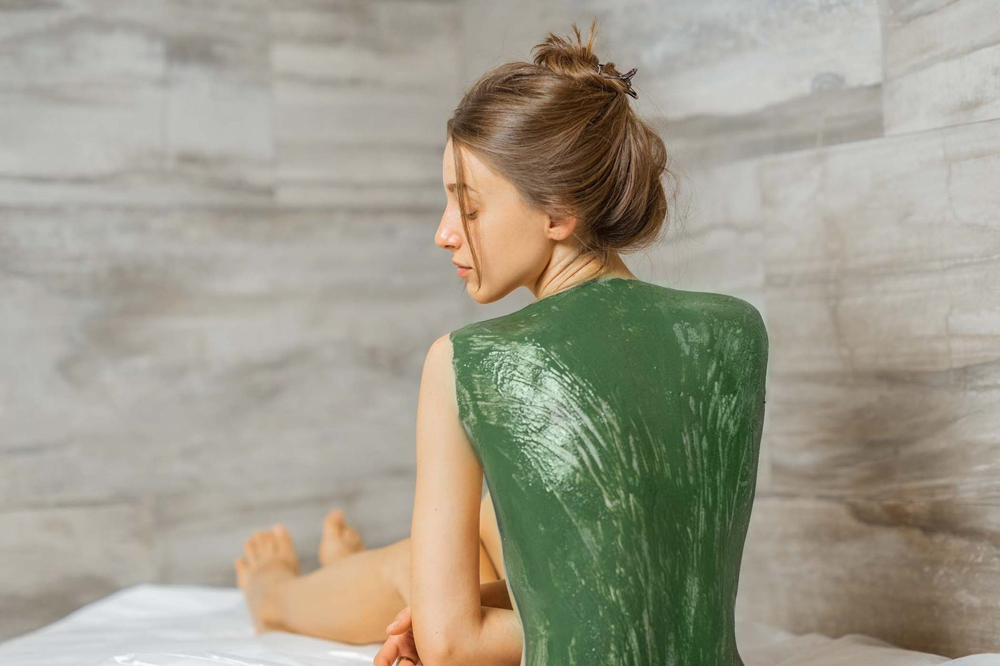

Unlocking the Secrets of Foot Reflexology: Benefits, Techniques, and More

Foot reflexology, an ancient practice with roots in various cultures, continues to captivate those seeking holistic wellness and relief from modern-day ailments. By focusing on specific points on the feet, this therapy promises to unlock a world of benefits, from relaxation to enhanced health. In this blog, we’ll delve into the secrets of foot reflexology, exploring its numerous benefits, the techniques involved, and everything else you need to know to make the most of this transformative practice.
What is Foot Reflexology?
Foot reflexology is based on the principle that the feet are a mirror of the body. Each area of the foot corresponds to different organs, systems, and glands. By applying targeted pressure to these reflex points, reflexologists aim to stimulate the body’s natural healing processes, promote relaxation, and restore balance. Though its origins date back thousands of years to ancient Egypt, China, and India, reflexology remains a popular and effective therapy in modern wellness.
The Benefits of Foot Reflexology
- Stress Relief and Relaxation: Reflexology is renowned for its ability to induce deep relaxation. The therapy helps lower cortisol levels and promotes the release of endorphins, creating a calming effect that can reduce stress and anxiety. Regular sessions can help manage daily stress and improve overall mood.
- Enhanced Circulation: By stimulating reflex points on the feet, reflexology can improve blood flow throughout the body. This enhanced circulation helps deliver oxygen and nutrients to tissues and organs, supporting cardiovascular health and aiding in the healing process.
- Pain Management: Reflexology is often used as a complementary approach for managing chronic pain conditions such as arthritis, migraines, and lower back pain. By targeting specific reflex points, practitioners may help alleviate discomfort and provide relief from persistent pain.
- Digestive Health: Reflexology can support digestive function by focusing on reflex points related to the stomach, intestines, and other digestive organs. This can help address issues like constipation, bloating, and indigestion, leading to improved digestive health and comfort.
- Improved Sleep Quality: The relaxation achieved through reflexology can contribute to better sleep. By reducing stress and promoting a sense of well-being, reflexology can help address insomnia and other sleep-related issues, leading to a more restful night’s sleep.
- Emotional and Mental Balance: Reflexology not only benefits physical health but also supports emotional well-being. The therapy’s calming effects can help reduce symptoms of anxiety and depression, contributing to a more balanced and positive outlook on life.
- Boosted Energy Levels: Many people report feeling more energized and revitalized after reflexology sessions. By promoting overall balance and well-being, reflexology can help enhance your sense of vitality and boost energy levels.
Techniques and Approaches in Foot Reflexology
Reflexologists employ a variety of techniques to stimulate reflex points and achieve therapeutic benefits. Some of the key techniques include:
- Thumb Walking: This technique involves using the thumbs to apply pressure in a walking motion over reflex points.
- Finger Pressure: Applying gentle or firm pressure with the fingers to stimulate specific areas.
- Rotary Movements: Using circular motions to work on reflex points and release tension.
What to Expect During a Reflexology Session
A typical reflexology session begins with a consultation where the practitioner discusses your health history and any specific concerns. The session, which usually lasts between 30 to 60 minutes, involves applying pressure to different areas of your feet. Most people find the experience relaxing and rejuvenating, often noticing immediate relief from tension and discomfort.
Integrating Reflexology into Your Wellness Routine
To fully benefit from reflexology, consider incorporating it into your regular wellness routine. Regular sessions with a professional reflexologist can provide ongoing benefits, but you can also explore self-care techniques for home practice. Complementing reflexology with other healthy habits, such as a balanced diet, regular exercise, and adequate sleep, can further enhance your overall well-being.
Conclusion
Foot reflexology offers a holistic approach to improving health and well-being by focusing on the feet’s reflex points. With its wide range of benefits, including stress relief, pain management, improved circulation, and better sleep quality, reflexology can play a significant role in your wellness journey. By unlocking the secrets of foot reflexology, you can experience a deeper sense of relaxation, vitality, and balance.